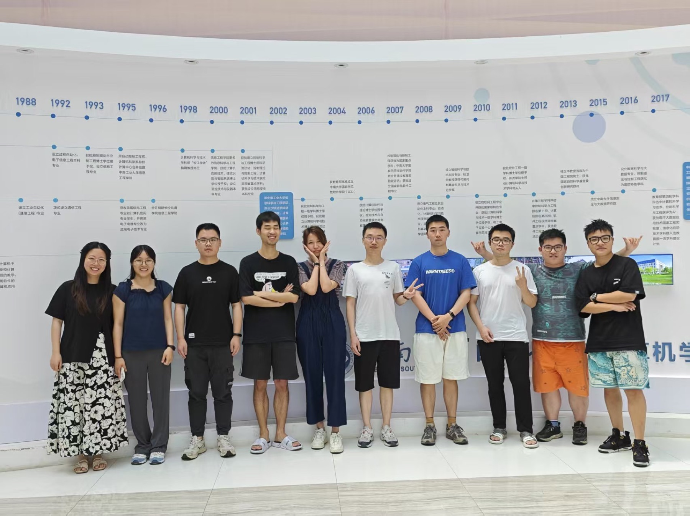

RESEARCH

INTELLIGENT VISUAL MEDIA LAB
Intelligent Visual Media Lab
We study the relationship between data, visual representation, human cognition, and intelligent models to create accurate, trustworthy, and interactive visualization methods.
01 About
Start with the question.
Build technology for understanding.
LAB FILM · AN INTRODUCTION
The Intelligent Visual Media Lab is based in the School of Computer Science and Engineering at Central South University. Our work focuses on visual analytics and intelligent visualization powered by foundation models.
We connect fundamental research with real-world questions, investigating how complex data can be represented, understood, and analyzed in an open, collaborative, and interdisciplinary environment.
02 News
What is happening in the lab.
03 Publications
Research publications and open practice.

Walking Through Discussions: A Mobile Visual Analytics System for In-Situ Group Discussion Analysis
IEEE VIS 2026 · VIS Full Paper
MobileGroupVis helps teachers monitor several classroom discussion groups while moving around the room. Its streaming audio-analysis pipeline and six coordinated mobile views reveal participation, interaction, topic progression, and topic deviation; case studies and expert interviews suggest that the system helps teachers locate groups needing attention and intervene with better context.

Beyond Quantification of Neighborhoods: Perception-Driven Quality Measures for Dimensionality Reduction
IEEE VIS 2026 · VIS Full Paper
Conventional neighborhood-preservation metrics can assign high scores to dimensionality-reduction layouts that still contain visible local distortions. This work introduces perception-grounded labeling and NPNet, a neural quality measure learned from pairwise human judgments, then uses the measure to compare existing projection metrics and provide practical guidance.
Open dataset, tool, or system — title placeholder
A concise description of the problem, scale, and intended use
No matching publications.
04 People
Different perspectives. One shared direction.

LAB DIRECTOR
Jiazhi Xia Professor · PhD Supervisor
Research area: data visualization. Professor and doctoral supervisor at the School of Computer Science and Engineering, Central South University.
Homepage
FACULTY
Shichao Kan Associate Professor
Research area: multimodal foundation models.

FACULTY
Yijun Li Specially Appointed Associate Professor
Research area: virtual reality.

FACULTY
Jiehui Zhou Postdoctoral Researcher
Research area: data visualization.
DOCTORAL STUDENTS
PhD Students
Xin Zhao
Yiping Sun
Pu Huang
Zhiwei Deng
Weifeng Wei
Yueri Yan
Xinhao Feng
Kairen Chen
MASTER'S STUDENTS
Master's Students
Chunxi Deng
Chen He
Zhongjin Zhang
Lifeng Wang
Ziyao Kang
Linxuan Tian
Yu Liang
Yuntao Li
Kunpeng Zhang
Bochao Yan
Xinyi Peng
Jiaxuan Wang
Shuang Gao
Yuzhuo Yuan
Tao Huang
Hai Lin
20XXAlumni Name
Destination: university / industry / research institute
20XXAlumni Name
Destination: university / industry / research institute
20XXAlumni Name
Destination: university / industry / research institute
05 Activities
Beyond research, we grow together.

LAB MILESTONES
Graduation and New Beginnings
Celebrating the milestones that mark a completed chapter and the start of a new journey.
01 / 03
06 Join Us
For people who stay curious about the question.
We welcome prospective PhD and master's students, research assistants, and interns who want to work on real research questions. Please include your CV and a short introduction to your interests and relevant experience.
Contact the Lab ↗PhD StudentsDoctoral ProgrammeOPEN
Master's StudentsMaster's ProgrammeOPEN
Research Assistants / InternsRA / InternshipsONGOING
Application email xiajiazhi@csu.edu.cn